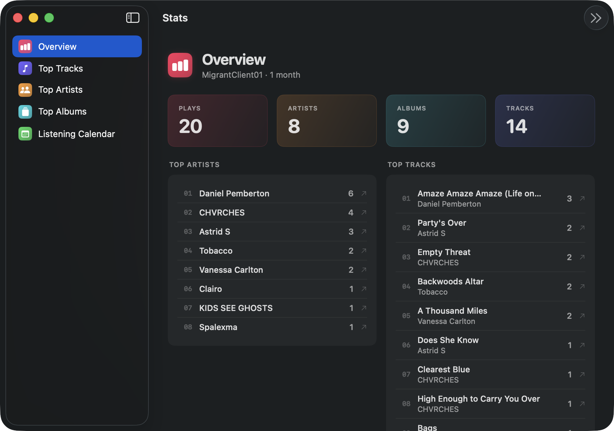
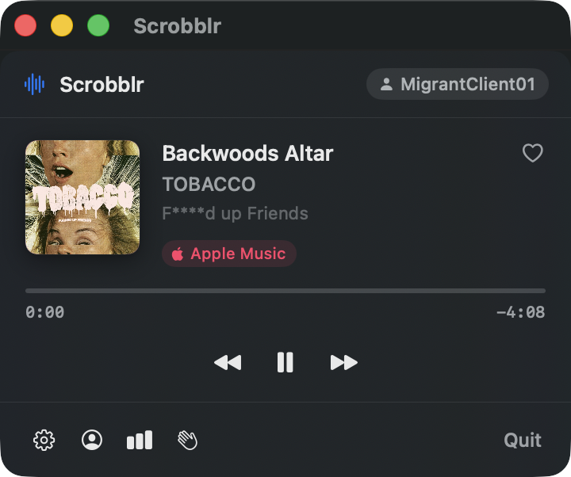
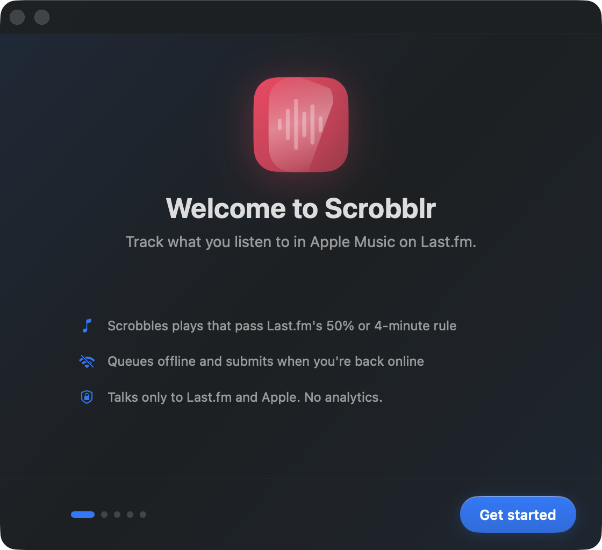

Every play,
on the record.
Scrobblr lives in your menu bar and sends what you play in Apple Music® to Last.fm™. It queues while you're offline, catches up when you're back, and stays out of the way.
Free and open source · macOS 14 or later · Apple silicon and Intel
An illustration with sample tracks, sped up.
Set it and forget it.
Scrobblr starts at login, watches Apple Music, and only asks for your attention when something needs it.
- In the menu bar What's playing, with album art, a progress bar and whether it has been scrobbled yet.
- Queued when offline Plays wait on disk through sleep, reboots and dead Wi-Fi, then go out when you're back.
- Loved tracks Heart a track from anywhere in Scrobblr. Hearts match what's loved on Last.fm, even from your phone.
- Your other devices Playing on your phone or the web? It shows in the menu bar too, with plays from everywhere in your history.
- Your rules Pause for an hour, ignore artists or tracks, skip podcasts and audiobooks, or change the threshold.
- Stats Top tracks, artists and albums for any period, plus a listening calendar, straight from Last.fm.
A 3:30 track counts after 1:45, half its length.


Private by design.
- Nothing in betweenPlays go straight from your Mac to Last.fm. Album art comes from Apple's anonymous search. There's no Scrobblr server and no analytics.
- Your own keyYou register a free Last.fm API key, so no shared key can be revoked and break the app. It lives in your Keychain.
- Logs without titlesDiagnostic logs leave out track and artist names, so a bug report never carries your listening history.
Four steps to your first scrobble.
The welcome window walks you through all of it.
- DownloadOpen the DMG and drag Scrobblr into Applications.
- Get a Last.fm API keyIt's free and takes about 30 seconds at last.fm/api.
- ConnectPaste the key and secret, then approve Scrobblr on Last.fm.
- Press playAllow access to Music when macOS asks. Scrobbles start with the next track.

Shipped in the open.
Every release is notarized by Apple, signed for Sparkle updates, and listed in a public appcast. This list reads from it.
Get Scrobblr.
Free and open source under the MIT license.
Version 0.1.16 · macOS 14 or later · Updates itself